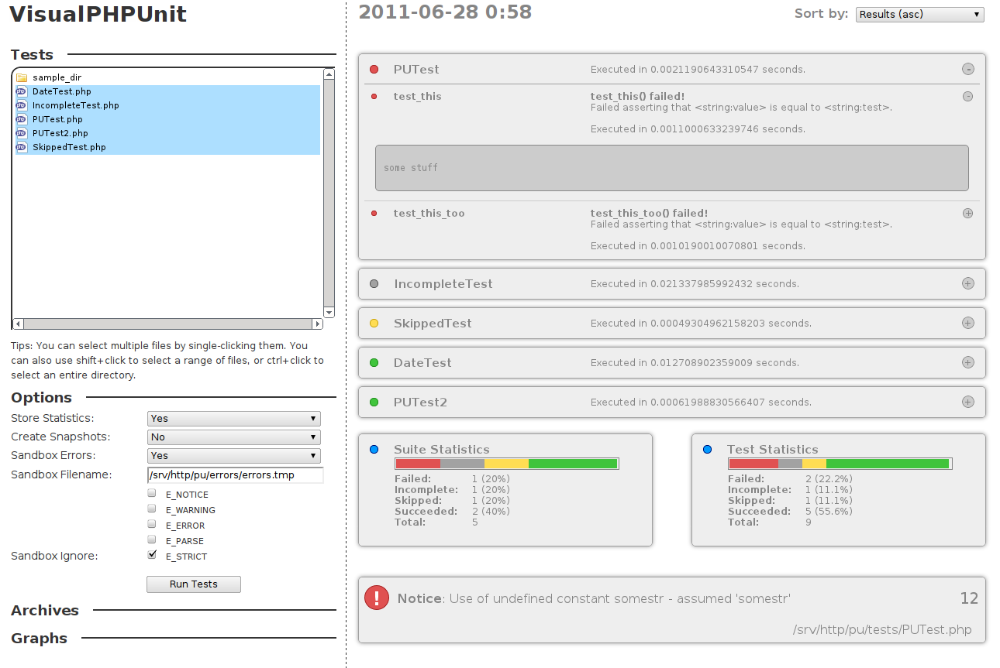

The command line is a beautiful thing. Unfortunately, it has its shortcomings - some of which become painfully obvious when one tries to run Sebastian Bergmann's PHPUnit against a suite of PHP unit tests.

Admittedly, all the information you need is right there. But what if you want...
Enter VisualPHPUnit. Aimed at being the definitive unit test management system for PHPUnit, it provides an elegant solution to the above demands. VPU also features:
Still not convinced?
